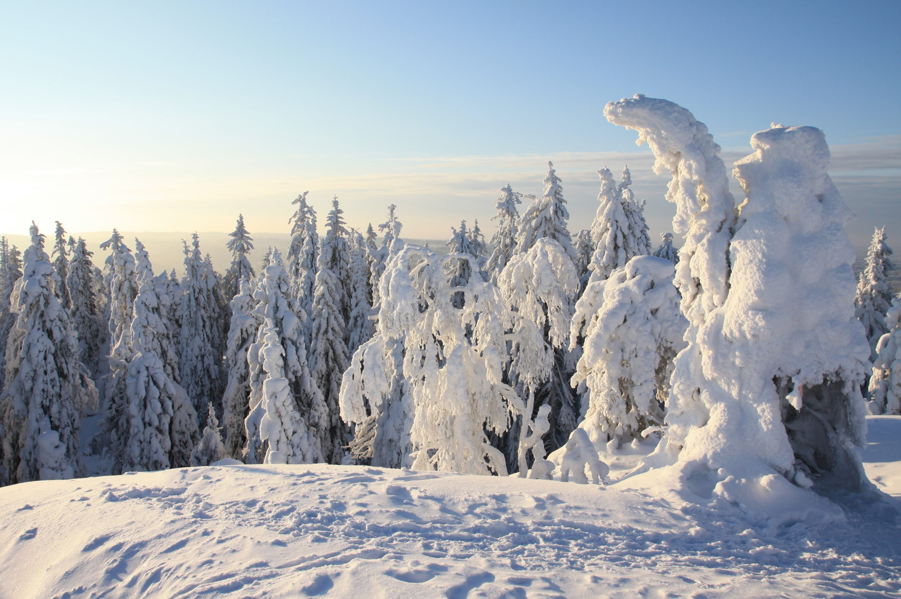

Koli
Suomen tunnetuin kansallismaisema. Koe Kolin lumo, avara ja upea maisema jylhien vaarojen laelta.
Etsi mielen ja sielun rauhaa ikiaikaisista metsistä ja näkymistä yli Pielisen. Muun muassa Jean Sibeliusta,
Eero Järnefeltiä ja Juhani Ahoa innoittanut maisema on yhä luonnossa liikkujien, vaeltajien ja taiteilijoiden rakastama.
Soveltuvuus: Sopii kaiken ikäisille ja kaikenkuntoisille vuoden ympäri. Joitakin esteettömiä palveluita.
Sää Kolilla

Maanantai
Päivä - 35.6° C
Tiistai
Päivä - 35.6° C
Keskiviikko
Päivä - 35.6° C
Torstai
Päivä - 35.6° C
Perjantai
Päivä - 35.6° C
Lauantai
Päivä - 35.6° C
Sunnuntai
Päivä - 35.6° C